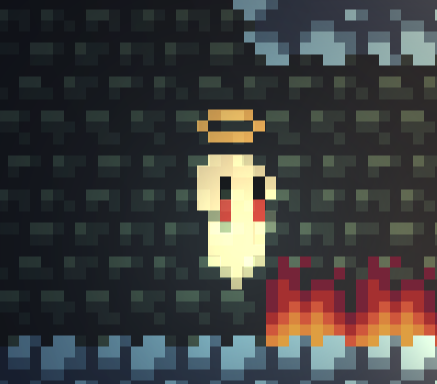
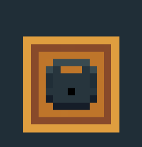
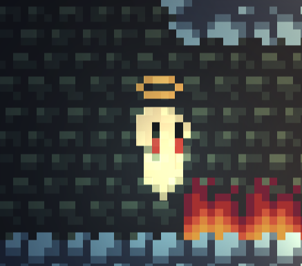
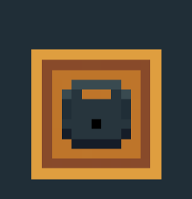

My name is Adeena Khan, and I'm a senior at Massachusetts Institute of Technology majoring in Chemical-Biological Engineering. I have a passion for Computer Science and Coding, which is why I've created a webpage for my Engineering portfolio.

Some of my interests include design optimization, medical device design, pharmaceutical production, and coding. Below you can see some of the projects that I've worked on over the years!
CMS.594 Project: Video Game Development of "Dude"
School project where four classmates and I were tasked with the job to make a game that is playable and responsive. The theme for games this year was "Platformer".
Coding Team: Interaction and Basic Display
My tasks varied depending on which team I was on. Originally, in the prototype phase I was responsible for coding the ability to pick up and use items, in addition to a display system. My design was largely based off of what I thought would be intuitive to the player, in addition to user feedback. Originally I coded it so that to pick up items people have to press "E", but people found this disrupted to gameplay. As a result, I changed it to just walking over something to immediately select it. The upper left corner was chosen to display the inventory because it's towards the corner of vision, and therefore is easy to see while also not being disruptive to gameplay.
After the prototype, we restarted our code base from scratch in order to make the code more coherent. I was moved to the assets team, where I made some sprites, UI assets, and also animations. Below are some of the animations and sprites I made. Hover over them to hear their design process! Note that the ghost, tombstone, and key sprite design were made by one of my teammates, and I used them as a starting point to make my animations and the key-in-ice-block!
 



Some other design issues I had to think about were making sure that my animations would not hinder people's abilities to learn the controls. One animation bug that occured was the ghost spirit rotating rapidly in the first level after reviving. I thought it would be confusing to the player for this to occur, as this was the first level and they're still learning the control. As a result I decided to standarize the revive so that the player would land on the survive they revive on. I also noticed when I first was animating was that the animations proceeded extremely slowly. Because the game is time-sensitive (due to moving platformers and pressure plates), I thought it would be important to speed up the animation time. Speeding up also made the animation look a lot more smooth, and reduced boredom. These were just some of the decisions I made.